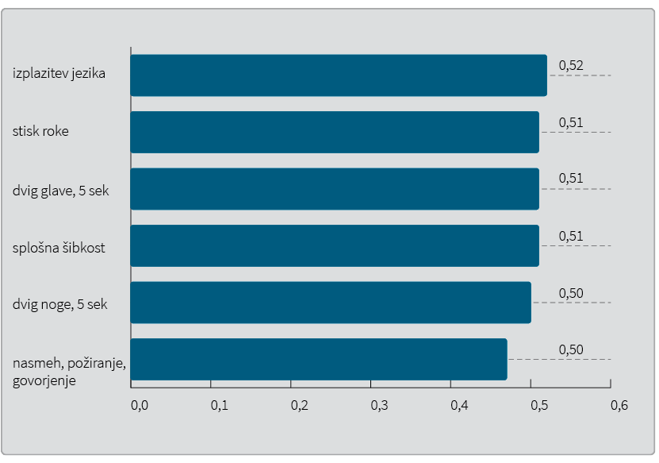
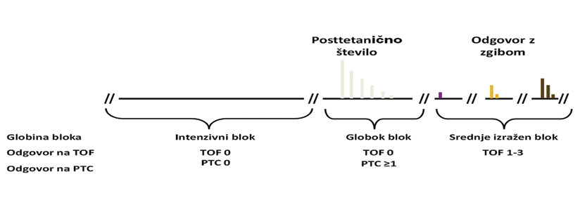

Strokovno stališče Združenja za anesteziologijo in intenzivno medicino o uporabi sugamadeksa
Position statement of the Slovenian society of anaesthesiology and intensive care medicine on the use of sugammadex
Izvleček
V prispevku predstavljamo strokovna stališča za uporabo specifičnega vezalca aminosteroidnih mišičnih relaksantov, sugamadeksa, v najpogostejših kliničnih okoliščinah. Te so: nujna intubacija, ko bolnika ni mogoče niti predihavati niti intubirati, pri bolnikih z živčno-mišičnimi boleznimi, z jetrno okvaro, z ledvično okvaro, pri alergiji na sugamadeks, pri alergiji na rokuronij, v primeru zaostale mišične relaksacije ter pri uporabi mišičnega relaksanta kratek čas po uporabi sugamadeksa. Kot učinkovino izbire ga uporabimo pri motnjah srčnega ritma, KOPB, astmi, živčno-mišičnih boleznih, bolezenski debelosti, pri neprekinjeni infuziji aminoglikozidnih mišičnih relaksantov med operacijo. Med operacijo je zato potrebno nadzorovati živčno-mišični blok zaradi različnega odziva bolnikov na mišični relaksant. Samo klinični testi niso ustrezna zamenjava za objektivni nadzor nad povratkom mišične moči.
Abstract
We present our position statement for the use of sugammadex, a specific binder for aminosteroid muscle relaxants, in the most common clinical circumstances (in the case of an emergency intubation, when the patient cannot be ventilated or intubated; in patients with neuro-muscular disease, in patients with liver failure, in patients with renal failure, in patients with allergic reaction to sugammadex or to rocuronium, in cases of residual muscle relaxation and when we have to use a muscle relaxant short time after sugammadex application). Sugammadex is the drug of choice in cases of cardiac arhythmia, COPD, asthma, neuro-muscular diseases, pathological obesity, intraoperative use of continuous infusion of aminoglycoside muscle relaxants. It is therefore necessary to control the neuro-muscular block during surgery due to different response of patients to the muscle relaxant. Clinical tests alone are not an adequate substitute for objective control of muscular strength recovery.
1 Uvod
V zadnjih letih smo v Sloveniji dobili novo učinkovino, s katero lahko hitro in učinkovito povrnemo mišično moč bolnikom, pri katerih je bilo med operacijo potrebno zagotoviti živčno-mišični blok (ŽMB), zanj pa smo uporabili aminoglikozidni mišični relaksant rokuronij ali vekuronij. Da bi prispevali k izboljšanju varnosti bolnikov po kirurških posegih, pri katerih smo uporabili ta dva mišična relaksanta, smo izdelali strokovna stališča, v katerih predstavljamo uporabo specifičnega vezalca aminosteroidnih mišičnih relaksantov sugamadeksa v najpogostejših kliničnih okoliščinah. Strokovna stališča za uporabo sugamadexa so bila sprejeta na sekcijskem sestanku Slovenskega združenja za anesteziologijo in intenzivno medicino 29. 11. 2016, potrjena na SS za anesteziologijo dne 28. 10. 2017 in GSS SZD dne 14. 11. 2017.
2 Nadzor globine živčno-mišične blokade
Z vzdrževanjem globoke živčno-mišične blokade (ŽMB) med posegom ter s čim prejšnjo vzpostavitvijo popolne mišične moči na koncu operacije zagotovimo negibnost bolnika med operacijo, zmanjšamo možnost zapletov med operacijo, zagotovimo optimalne pogoje za delo kirurga, skrajšamo čas operacije in omogočimo varno ekstubiranje (1-15). Med operacijo je treba nadzorovati ŽMB zaradi različnega odziva bolnikov na mišični relaksant, za zagotovitev primerne globine bloka za intubiranje ter za kirurški poseg in povrnitev primerne mišične moči za ekstubiranje, s čimer preprečimo zaplete zaradi zaostale relaksacije (16,17). Te je več pri debelosti, pri starostnikih, pri boleznih ledvic, jeter in pljuč.
Za objektivni nadzor ŽMB in zaostale relaksacije se najpogosteje uporablja zaporedje štirih dražljajev (

O intenzivnem ŽMB govorimo, ko ni odgovora na draženje TOF in PTC. Pri globokem bloku dosežemo odgovor na PTC, ne pa na draženje TOF. Za srednje izraženo blok je značilen povrnjen odgovor na draženje (TOF (Slika 2) (21).

Nadzor intenzivnosti ŽMB se priporoča vedno, ko bolnika relaksiramo z nedepolarizirajočimi mišičnimi relaksanti ter pred uporabo sugamadeksa (19,22).
Merjenje odziva na električno draženje na primikalki palca je trenutno edina praktična metoda za oceno globine mišične relaksacije.
Z uporabo sugamadeksa lahko hitro povrnemo mišično moč, saj odmerek prilagajamo globini blokade in ne starosti in spolu (Tabela 1) (22-25). Odmerjamo ga glede na idealno telesno težo.
Lahko ga uporabljamo za ŽMB pri carskem rezu in pri doječih materah. V poskusih na živalih niso odkrili teratogenih učinkov. Za varno uporabo pri otrocih do 2 let ni znanih podatkov.
3 Uporaba sugamadeksa pri nujni intubaciji, ko bolnika ni mogoče niti predihavati, niti intubirati
V primerih, ko so uporabili rokuronij v odmerkih 1,2 mg / kg (za nujno vstavitev dihalne cevke) in bolnika ni mogoče niti predihavati niti intubirati, se lahko za prekinitev živčno-mišičnega bloka uporabi sugamadeks v odmerkih 16 mg/kg (26-29).
Da bi se izognili takšnim situacijam, moramo v primerih, ko je predvidena težka intubacija in nujna vstavitev dihalne cevke z rokuronijem, izdelati načrt, ki naj vsebuje:
•izračun ustreznega odmerka sugamadeksa za urgentno prekinitev ŽMB;
•mesto shranjevanja in zadostno količino sugamadeksa za nujne primere (v neposredni bližini) operacijskih prostorov.
4 Ponovitev dajanja mišičnega relaksanta kratek čas po uporabi sugamadeksa
V redkih primerih, ko je potrebno ponoviti ŽMB v zgodnjem obdobju po operaciji (nekaj minut ali nekaj ur po uporabi sugamadeksa), obstajajo 3 možnosti:
•uporaba sukcinilholina,
•uporaba benzil-izokinolonskih relaksantov,
•ponovna uporaba rokuronija (Tabela 2).
Hitrost nastopa ŽMB in njegovo trajanje sta nepredvidljiva. Odvisna sta od delovanja ledvic, odmerka rokuronija, odmerka pred tem uporabljenega sugamadeksa in od časa, ki je pretekel od njegove uporabe. V takem primeru je potrebno uporabiti živčno-mišični nadzor (27,30,31).
5 Uporaba sugamadeksa pri bolnikih z živčno-mišičnimi boleznimi
V skupino bolnikov z živčno mišičnimi boleznimi spadajo bolniki z:
•mišičnimi distrofijami,
•miotoničnimi distrofijami,
•družinskimi periodičnimi paralizami,
•miastenijo gravis,
•miasteničnim sindromom,
•poliradikulonevritisom (sindrom Guillain Barre),
•multiplo sklerozo,
•Huntingtonovo boleznijo.
Bolniki z razvito klinično sliko imajo parezo ali paralizo ter atrofijo nekaterih mišic ali mišičnih skupin. Za vse bolnike z živčno-mišičnimi boleznimi je značilna spremenjena farmakodinamika in povečana občutljivost na mišični relaksant (32,33).
Pri bolnikih z živčno-mišičnimi boleznimi splošna anestezija z uporabo mišičnega relaksanta zahteva zmanjšanje odmerka/prilagoditev odmerka mišičnega relaksanta ter obvezno uporabo nadziranja globine ŽMB. Klasična prekinitev ŽMB z zaviralci acetilholiesteraze lahko pri bolnikih z živčno-mišičnimi boleznimi ne ustreza. Uporaba mišičnega relaksanta z nenadzorovano in neustrezno antagonizacijo ŽMB poveča tveganje, da je po operaciji prisotna zaostala mišična relaksacija ter je zato potrebna mehanična dihalna podpora, kar zahteva zdravljenje v enoti za intenzivno terapijo. Pri bolnikih z živčno-mišičnimi boleznimi priporočamo uporabo rokuronija za izvedbo nujne vstavitve dihalne cevke, kakor tudi za mišično relaksacijo med splošno anestezijo. Globino ŽMB je potrebno nadzorovati, ustrezno prilagajati posamezne odmerke rokuronija ter ŽMB ob koncu anestezije prekiniti s sugamadeksom (34-49).
Pri bolnikih z živčno-mišičnimi boleznimi se odsvetuje uporaba leptosukcina. Uporabe drugih mišičnih relaksantov pa ne priporočamo zaradi povečanega tveganja za zaostalo mišično relaksacijo po operaciji (32,33).
6 Uporaba sugamadeksa pri bolnikih z jetrno okvaro
Pri bolnikih z blago do zmerno jetrno okvaro ali za kirurške posege na jetrih lahko uporabljamo sugamadeks brez omejitev. Odločitev o uporabi sugamadeksa pri bolnikih s hudo jetrno okvaro, zlasti če jo spremljajo motnje strjevanja krvi, pa naj se dobro pretehta. Kolikor sugamadeks pri teh bolnikih vendarle uporabimo, je obvezen nadzor ŽMB in podaljšan nadzor bolnika po operaciji. Pri bolnikih z znanimi motnjami strjevanja krvi priporočajo nadzor aPTČ, PČ in INR po dajanju sugamadeksa (50-52).
7 Uporaba sugamadeksa pri bolnikih z ledvično okvaro
Pri bolnikih s hudo ledvično okvaro (vključno s tistimi na dializi (očistek kreatinina < 30 ml/min)) uporabe sugamadeksa ne priporočamo. Z raziskavami pri bolnikih s hudo ledvično okvaro niso pridobili dovolj podatkov o varnosti, ki bi podpirala uporabo sugamadeksa. Če se pri teh bolnikih zaradi spremljajočih bolezni kljub temu odločimo za prekinitev ŽMB s sugamadeksom, so v posameznih primerih odstranili kompleks sugamadeksa in rokuronija iz krvnega obtoka z dializo z velikimi pretoki. Pri bolnikih z blago ali zmerno ledvično okvaro (očistek kreatinina ≥ 30 in < 80 ml/min) so priporočeni odmerki enaki kot za vse odrasle bolnike brez ledvične okvare (53,54).
8 Alergija na sugamadeks
Incidenca alergije na sugamadeks je 0,3 %. Še posebej skrbno moramo bolnika nadzorovati v obdobju 5 minut po vbrizganju sugamadeksa, da hitro prepoznamo in takoj zdravimo alergične reakcije na sugamadeks, ki lahko ogrozijo bolnikovo življenje. Alergija na sugamadeks je kontraindikacija za njegovo uporabo (55-57).
9 Uporaba sugamadeksa pri bolnikih z alergijo na rokuronij
Sugamadeks lahko pomaga pri zdravljenju nekaterih bolnikov z anafilaksijo, za katero sumimo, da jo je povzročil rokuronij, čeprav način delovanja sugamadeksa v teh okoliščinah ni jasen. To velja posebej v okoliščinah, ko ostali konvencionalni ukrepi niso uspešni in je ogroženo bolnikovo življenje. Priporočajo zgodnje dajanje sugamadeksa v velikih odmerkih (16 mg / kg) (58,59).
10 Uporaba sugamadeksa pri zaostali relaksaciji
Zaostala relaksacija je razmeroma pogosta po operacijah, pri katerih je potreben globok ŽMB do konca operacije. Opazimo pa jo lahko tudi pri bolnikih, pri katerih se je čas delovanja mišičnega relaksanta zaradi individualnega odgovora podaljšal. Zaostalo relaksacijo definiramo kot nepričakovano podaljšanje ŽMB po splošni anesteziji.
Dejavniki tveganja za nastanek zaostalega ŽMB so:
•čas od zadnjega odmerka relaksanta (rokuronij, vekuronij);
•presnova (različna odzivnost bolnika na odmerke mišičnega relaksanta);
•lastnosti bolnikov (debelost, starostniki, spremljajoče bolezni – jetrna okvara, ledvična okvara, KOPB, živčno-mišične bolezni);
•zdravila s sinergističnim delovanjem z mišičnim relaksantom (aminoglikozidni antibiotiki, litij, verapamil);
•hipotermija/acidoza.
Uporaba mišičnega relaksanta in nezadostna prekinitev ŽMB so dejavniki tveganja za zaplete po operaciji (60-63).
11 Prekinitev ŽMB
Zaviralce acetilholinesteraze (neostigmin) lahko uporabimo za povrnitev mišične moči pri zmernem mišičnem bloku (TOF = 1–2). Neostigmin uporabljamo v odmerkih 0,05–0,07 mg/kgt. V praksi se uporablja 2,5 mg neostigmina skupaj z 1 mg atropina. Ni pa učinkovit pri globoki mišični blokadi (TOF = 0, PTC 1).
Če ugotovimo s TOF ali kliničnimi znaki prisotnost zaostalega ŽMB po uporabi neostigmina, lahko popolno povrnitev mišične moči dosežemo s sugamadeksom v odmerku 2 mg/kg. Če ugotovimo zaostalo ŽMB kljub uporabi učinkovin za prekinitev ŽMB, moramo zagotoviti ustrezno oksigenacijo in standardni nadzor. Če je dihanje bolnika še vedno nezadostno, ga ponovno intubiramo ali ga intubiranega premestimo v enoto za intenzivno zdravljenje zaradi nadaljevanja podpore dihanju. Vzdržujemo normokarbijo in normotermijo. Če je potrebno, bolnika sediramo (propofol, midazolam) (64,65).
12 Priporočene indikacije za uporabo sugamadeksa
Pri nekaterih bolezenskih stanjih je sugamadeks za prekinitev ŽMB učinkovina izbire. Ta stanja zajemajo:
•motnje srčnega ritma;
•KOPB, astma;
•živčno-mišične bolezni;
•bolezenska debelost;
•uporaba neprekinjene infuzije aminoglikozidnih mišičnih relaksantov med operacijo.
ŽMB ni potrebno antagonizirati pri TOFr ≥ 0,9 (63).